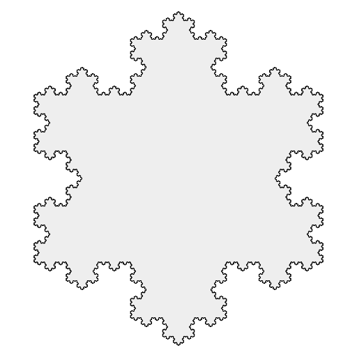

Kilka słów o fraktalach
Fraktal (łac. fractus – złamany) - potocznie obiekt samopodobny, "nieskończenie subtelny". Matematycy określają fraktal jako zbiór, który posiada takie cechy jak np.: nietrywialna struktura, względnie prosta definicja rekurencyjna. Przykłady fraktali można spotkać w przyrodzie są to: płatki śniegu, kwiat kalafiora, błyskawice.
Na obrazku obok znajduje się siódma iteracja krzywej Kocha - fraktalu przypominającego płatek śniegu.